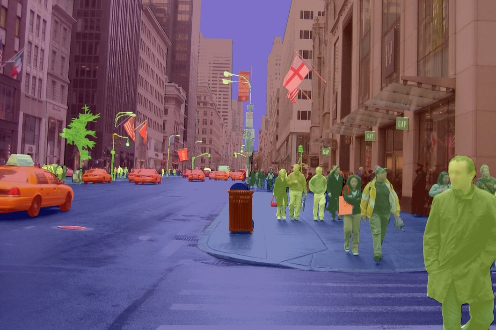

Vision Segmentaion Model

Project Overview
Vision Segmentation Model is a deep learning model designed to identify and segment objects in images. The project aims to provide a robust and accurate solution for image processing tasks, including:
- Object detection and classification.
- Image segmentation and labeling.
- Real-time image processing for video streams.
Key Features
- Deep Learning: Utilizes state-of-the-art neural networks for image processing.
- Object Detection: Identifies objects and their boundaries in images.
- Image Segmentation: Labels and segments objects for further analysis.
- Real-time Processing: Supports video streams for live object detection.
Technologies Used
- Programming: Python
- Machine Learning Frameworks: TensorFlow, PyTorch
- Data Processing Tools: Pandas, NumPy
- Visualization: Matplotlib, Plotly
- Version Control: Git, GitHub